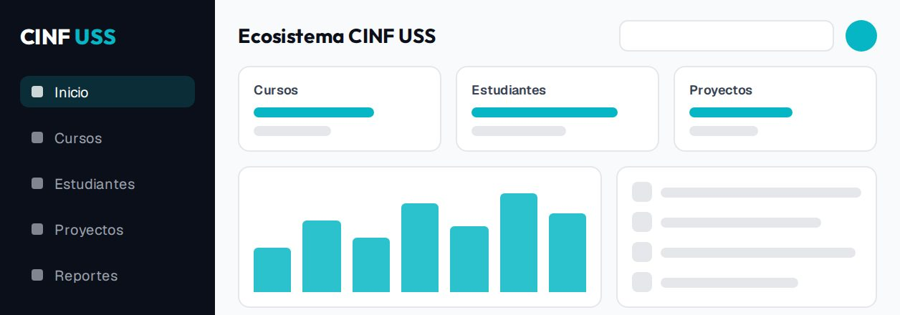
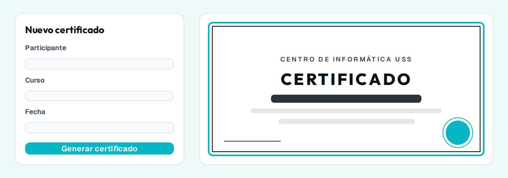

Ecosistema CINF USS
Plataforma para la gestión académica y proyectos estudiantiles del Centro de Informática.

Plataforma para la gestión académica y proyectos estudiantiles del Centro de Informática.

Aplicación para automatizar la emisión y validación de certificados digitales.
| Tecnología | Para qué la uso | Dónde está |
|---|---|---|
| HTML5 | Estructura y contenido de las cuatro páginas | *.html |
| CSS3 | Colores, tipografía, fondos y bordes del diseño | assets/css/ |
| JavaScript | Controles propios del video | assets/js/reproductor.js |
| Figma | Diseño de la página y sus medidas | Archivo «Mi portafolio» |
| Publicado en Netlify | ||